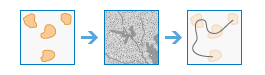

A análise de raster permite realizar análises de grandes conjuntos de dados raster usando ArcGIS Image Server. Isto permite que você analise mais dados de forma rápida utilizando o poder da tecnologia do servidor.Os conjuntos de ferramentas atualmente disponíveis através da experiência de usuário web do Portal for ArcGIS são Resumir Dados, Analisar Padrões, Utilizar Proximidade, Analisar Imagem, Analisar Terreno, Gerenciar Dados, Aprendizagem Detalhada, e Análise Multidimensional.
Resumir Dados
Essas ferramentas são usadas para calcular estatísticas para uma camada de raster dentro dos limites de área (zonas) definidos por você.
- Resumir Raster Dentro calcula estatísticas das células raster que caiem dentro dos limites de área definidos.
- Estatística Zonal como Tabela resume os valores de um dado raster dentro das zonas de outro conjunto de dados e registra os resultados em uma tabela.
Resumir Raster Dentro |

|
Esta ferramenta resume os valores de um raster dentro das zonas de outro conjunto de dados.
Estatística Zonal como Tabela |

|
Esta ferramenta resume os valores de um raster dentro das zonas de outro conjunto de dados e relata os resultados em uma tabela.
Analisar Modelos
Estas ferramentas ajudam você a identificar, quantificar e visualizar modelos espaciais em seus dados.
- Calcular Densidade leva em conta as quantidades conhecidas de algum fenômeno e cria um mapa de densidade espalhando estas quantidades através do mapa.
- Interpolar Pontos prevê valores em novos locais baseado em medidas localizadas em uma coleção de pontos.
Calcular Densidade |

|
A densidade leva em conta as quantidades conhecidas de algum fenômeno e cria um mapa de densidade espalhando estas quantidades através do mapa. Você pode utilizar esta ferramenta, por exemplo, para mostrar concentrações de raios ou tornados, acessar instalações de atendimento à saúde e densidades da população.
Interpolar Pontos |

|
Esta ferramenta permite a você prever os valores em novos locais baseado em medidas localizadas em uma coleção de pontos. A ferramenta obtém dados do ponto com valores em cada ponto e retorna áreas classificadas por valores preditos. Você pode utilizar esta ferramenta, por exemplo, predizer níveis de chuva através de uma bacia baseado em medidas obtidas em pluviômetros individuais.
Utilizar Proximidade
Essas ferramentas ajudam a responder algumas das perguntas mais comuns colocadas na análise espacial: O que está perto de quê? e qual é o caminho mais favorável?
- Calcular Distância calcula a distância Euclidiana, direção e alocação de uma única ou conjunto de fontes.
- Determinar Rede de Custo da Viagem Favorável calcula a rede de custo favorável de um conjunto de regiões de entrada.
- Determinar Caminho de Custo da Viagem Como Polilinha calcula o caminho de polilinha de menor custo entre origens e destinos conhecidos.
- Acumulação de Distânciacalcula a distância acumulada de cada célula para origens, permitindo distância de linha direta, distância de custo, distância de superfície verdadeira, como também, fatores vertical e horizontal.
- Alocação de Distância calcula a alocação de distância de cada célula para origens fornecidas com base em distância de linha direta, distância de custo, distância de superfície verdadeira, como também fatores vertical e horizontal.
- Caminho Favorável como Linha calcula o caminho favorável dos destinos até origens como uma linha.
- Caminho Favorável como Raster calcula o caminho favorável dos destinos até origens como um raster.
- Conexões de Região Favoráveis calcula a rede de conectividade favorável entre duas ou mais regiões de entrada.
Calcular Distância |

|
Esta ferramenta calcula a distância Euclidiana, direção e alocação de uma fonte única ou conjunto de fontes.
Determinar Melhor Rede de Custo da Viagem |

|
Esta ferramenta calcula a rede de custo favorável de um conjunto de regiões de entrada.
Determinar Caminhos de Custo da Viagem Como Polilinha |

|
Esta ferramenta calcula o caminho de polilinha de menor custo entre destinos e origens.
Acumulação de Distância |

|
Esta ferramenta calcula a distância acumulada para cada célula até as fontes, permitindo distância em linha reta, distância de custo, distância real da superfície e fatores verticais e horizontais.
Alocação de Distância |

|
Esta ferramenta calcula a alocação de distância para cada célula para as fontes fornecidas com base na distância em linha reta, distância de custo, distância real da superfície e fatores verticais e horizontais.
Caminho Favorável como Linha |

|
Esta ferramenta calcula o caminho ideal dos destinos às origens como uma linha.
Caminho Favorável como Raster |

|
Esta ferramenta calcula o caminho ideal dos destinos às origens como um raster.
Conexões de Região Favoráveis |
 |
Esta ferramenta calcula a rede de conectividade ideal entre duas ou mais regiões de entrada.
Analisar Imagem
A seguinte ferramenta na categoria da ferramenta Analisar Imagem ajuda a analisar as imagens:
- Monitorar Vegetação detecta cobertura de vegetação reltiva em uma imagem com base nas operações aritméticas nas bandas. Vários índices de vegetação estão disponíveis para análise de imagem.
Monitorar Vegetação |

|
Executa uma operação aritmética nas bandas de uma camada de raster de bandas múltiplas para revelar as informações de cobertura da vegetação.
Analisar Terreno
Estas ferramentas ajudam você a analisar superfícies do raster.
- Calcular Declividade calcula a declividade do terreno.
- Derivar Aspecto calcula a direção da declividade mais íngreme de cada local.
- Criar Panorama identifica o que pode ser visto de qualquer ponto na paisagem.
- Panorama calcula a área que contribui acima das localizações identificadas em uma superfície.
Calcular Declividade |

|
Identifica uma superfície que mostra a declividade dos dados de elevação de entrada. A declividade representa a taxa de alteração da elevação de cada célula do modelo de elevação digital (DEM).
Derivar Aspecto |

|
Identifica a direção descendente da taxa máxima de alteração no valor de cada célula para seus vizinhos. O aspecto pode ser visto como a direção de declividade.
Criar Panorama |

|
Determina os locais em uma superfície de raster que são visíveis para um conjunto de observadores.
Vertente |

|
Determina a área de contribuição sobre um conjunto de células em um raster.
Gerenciar Dados
Estas ferramentas são utilizadas para gerenciamento de dados geográficos do dia a dia e para combinar dados antes da análise.
- Extrair Raster recorta partes de um conjunto de dados raster para análise adicional.
- Remapear Valores atribui valores diferentes para células raster.
- Converter Feição para Raster rasteriza os dados de vetor.
- Converter Raster para Feição vetoriza dados raster.
- Amostra extrai dados em locais definidos de um raster ou conjunto de rasters.
Extrair Raster |

|
Extrai células de um raster baseado no valor, formato ou a extensão de um conjunto de dados diferente.
Remapear Valores |

|
Altera os valores individuais ou intervalos de células para novos valores.
Converter Feição para Raster |

|
Cria um novo conjunto de dados raster a partir de um conjunto de dados de feição existente.
Converter Raster para Feição |

|
Cria um novo conjunto de dados de feição a partir de um conjunto de dados raster existente.
Amostra |

|
Cria uma tabela ou classe de feição de ponto com valores de dados em locais definidos extraídos de um raster ou conjunto de rasters.
Aprendizagem Detalhada
Estas ferramentas são utilizadas para detectar ou classificar feições específicas em uma imagem ou para classificar pixels em um conjunto de dados raster. Aprendizagem detalhada é um tipo de método de aprendizado automático de inteligência artificial que detecta feições em imagens utilizando várias camadas em redes neurais, onde cada camada é capaz de extrair uma ou mais feições exclusivas da imagem. Estas ferramentas consomem os modelos que foram treinados para detectar feições específicas em estruturas de aprendizagem detalhada de terceiros—como TensorFlow, CNTK e Keras—e mapas de classe ou feições de saída.
- Classificar Pixels Utilizando Aprendizagem Detalhada produz uma raster classificada utilizando um modelo de aprendizagem detalhada treinado.
- Detectar Objetos Utilizando Aprendizagem Detalhada produz uma classe de feição contendo objetos que encontra em uma imagem de entrada utilizando um modelo de aprendizagem detalhada treinado.
- Classificar Objetos Utilizando Aprendizagem Detalhada produz uma tabela ou classe de feição na qual cada objeto de entrada em um raster de entrada é atribuído com um rótulo de classe utilizando um modelo de aprendizagem detalhada treinado.
Classificar Pixels Utilizando Aprendizagem Detalhada |

|
Esta ferramenta executa um modelo de aprendizado detalhado testado em um raster de entrada para produzir um raster classificado, e cada pixel válido tem um rótulo de classe atribuído.
Detectar Objetos Utilizando Aprendizagem Detalhada |

|
Esta ferramenta executa um modelo de aprendizado detalhado e testado em um raster de entrada para produzir uma classe de feição contendo os objetos localizados por ela. As feições podem ser caixas delimitadoras ou polígonos ao redor dos objetos encontrados ou pontos nos centros dos objetos.
Classificar Objetos Utilizando Aprendizagem Detalhada |

|
Esta ferramenta executa um modelo de aprendizagem detalhada testado em um raster de entrada para produzir uma tabela ou classe de feição na qual cada objeto de entrada tem um rótulo de classe atribuído.
Análise Multidimensional
As ferramentas no conjunto de ferramentas Análise Multidimensional permite a você executar Análise em dados científicos através de variáveis e dimensões múltiplas.
Os dados multidimensionais representam dados capturados em tempos múltiplos, profundidades e alturas. Este tipo de dados está comumente utilizado em dados atmosféricos, oceanográficos e ciências da Terra. Com este conjunto de ferramentas, você pode analisar dados de raster multidimensional em formatos múltiplos, incluindo netCDF, HDF, GRIB, o conjunto de dados do mosaico multidimensional, e Cloud Raster Format (CRF) da Esri.
A seguinte tabela lista as ferramentas de análise multidimensional e fornece uma breve descrição de cada.
- Agregar Raster Multidimensional gera um conjunto de dados raster multidimensional agregando variáveis de raster multidimensional existentes ao longo de uma dimensão.
- Gerar Anomalia Multidimensional computa a anomalia de cada fatia em um raster multidimensional para gerar um raster multidimensional.
- Gerar Raster de Tendência estima a tendência de cada pixel ao longo de uma dimensão para um ou mais variáveis em um raster multidimensional.
- Prever Utilizando Raster de Tendência calcula uma camada raster multidimensional prevista utilizando o raster de tendência de saída da ferramenta Gerar Raster de Tendência .
- Localizar Estatística de Parâmetro extrai o valor da dimensão ou o índice de banda no qual uma determinada estatística é atingida para cada pixel em um raster multidimensional ou de múltiplas bandas.
Agregar Raster Multidimensional |

|
Esta ferramenta gera um conjunto de dados raster multidimensional agregando variáveis de raster multidimensional existentes ao longo de uma dimensão.
Localizar Estatística de Parâmetro |

|
Esta ferramenta extrai o valor da dimensão ou o índice de banda no qual uma determinada estatística é atingida para cada pixel em um raster multidimensional ou de múltiplas bandas.
Gerar Anomalia Multidimensional |

|
Esta ferramenta computa a anomalia de cada fatia em um raster multidimensional para gerar um raster multidimensional.
Gerar Raster de Tendência |

|
Esta ferramenta estima a tendência de cada pixel ao longo de uma dimensão para um ou mais variáveis em um raster multidimensional.
Prever Utilizando Raster de Tendência |

|
Esta ferramenta calcula um raster multidimensional previsto utilizando o raster de tendência de saída da ferramenta Gerar Raster de Tendência .